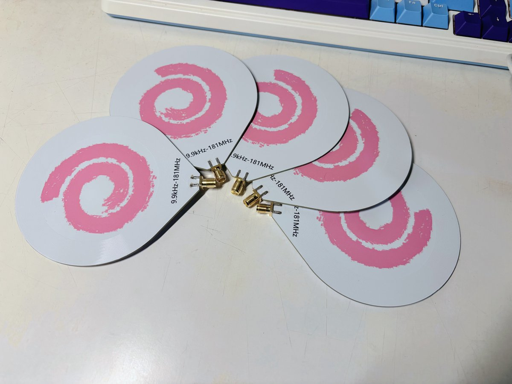
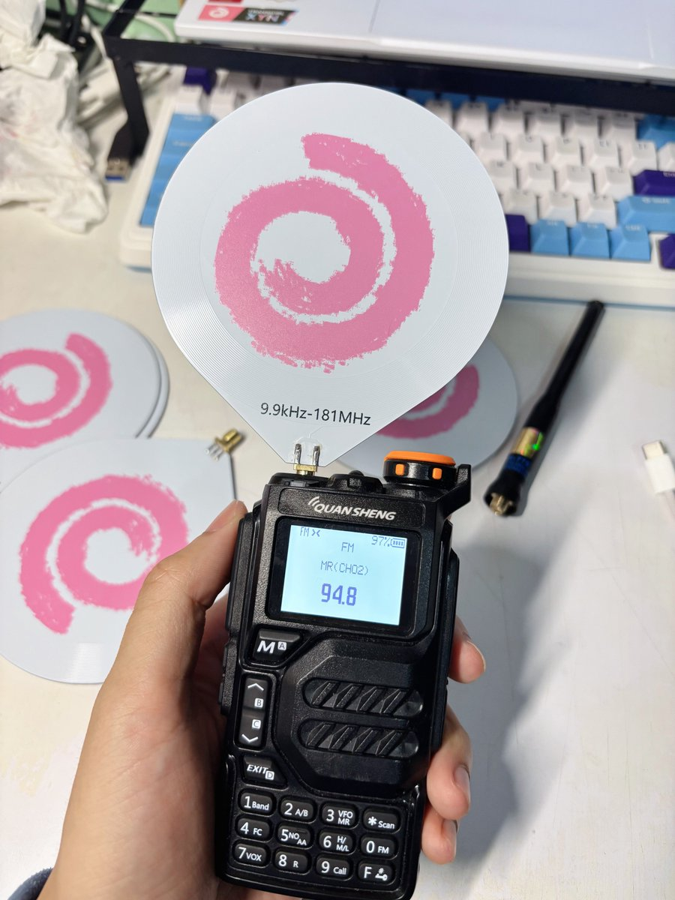
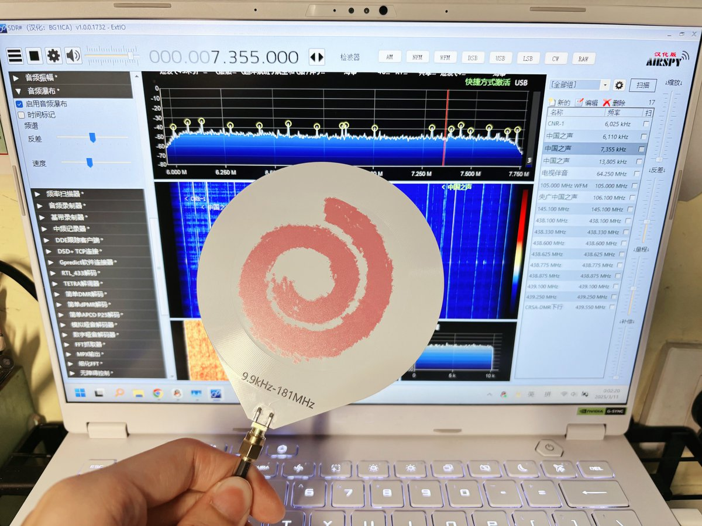

猫屎bot
@wind_dmr
@2temisinin 111送我



氯鸮西泮
@2temisinin
《鱼板雷达》
实际上是改了一下开源甜甜圈pcb天线+嘉立创彩色丝印
理论9.9kHz-181Mhz但是孩子还没买天分所以测不了具体参数
实测uvk5收fm广播接收很好，接sdr收短波广播也可以，发射因为v段频率没人中继也停了所以没测，短波估计不太行
做了五个，疑似有点小众所以不好抽奖，想玩的友台私我送ww https://t.co/pfynbN788j